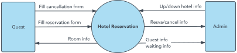

6. Diagramas Complementarios
5. Diagrama de Nivel
Los diagramas de nivel, también conocidos como diagramas de flujo de datos de alto nivel, son herramientas valiosas para comprender y analizar sistemas complejos. Su simplicidad y enfoque en los elementos esenciales los convierten en una opción ideal para visualizar el flujo de información entre subsistemas o entidades externas.
Estructura básica de un diagrama de nivel:
- Contexto: Representa el sistema o proceso general que se está analizando, delimitando su alcance y diferenciándolo del entorno externo.
- Procesos: Se representan como rectángulos o módulos, cada uno con una breve descripción de su función principal.
- Almacenes de datos: Se ilustran como cilindros o bases de datos, indicando el tipo de información que almacenan.
- Flujos de datos: Se representan como flechas con etiquetas que describen la naturaleza de la información que se transmite entre elementos.
- Entidades externas: Se muestran como figuras externas al sistema, como usuarios, proveedores o sistemas relacionados.
Tipos de diagramas de nivel:
Diagrama de contexto o de nivel 0
Ofrece una vista general del sistema, mostrando sus interacciones con el entorno externo.

Diagrama de nivel 1
Desglosa el sistema en sus principales subsistemas o procesos, mostrando sus interconexiones y flujos de datos.

Diagrama de nivel N
Profundiza en un subsistema o proceso específico, detallando sus componentes internos y flujos de datos más granularmente.

Aplicaciones de los diagramas de nivel:
Análisis de sistemas: Ayudan a comprender la estructura y el funcionamiento de un sistema, identificando sus componentes principales y las relaciones entre ellos.
Diseño de sistemas: Sirven como base para el diseño de nuevos sistemas o la reestructuración de sistemas existentes, optimizando el flujo de información y la interacción entre subsistemas.
Documentación de sistemas: Proporcionan una representación visual clara y concisa de un sistema, facilitando su comprensión y mantenimiento.
Comunicación de sistemas: Ayudan a comunicar la estructura y el funcionamiento de un sistema a diferentes partes interesadas, como desarrolladores, usuarios o gerentes.
Obra publicada con Licencia Creative Commons Reconocimiento Compartir igual 4.0